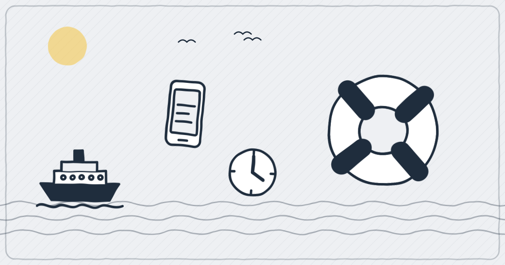

Alpha, Bravo, Oscar: Cruise Ship Codes Decoded

Coded calls like "Alpha" (medical) and "Bravo" (fire or smoke check) are instructions for crew, not passengers, and nearly all of them end quietly. You only need to act when you hear the general emergency alarm, seven short blasts and one long, or a plain-language instruction from the bridge.
On a ship of three or four thousand people, the public address system is busy, and nearly none of it needs you. Coded calls such as "Alpha" and "Bravo" are shorthand that sends trained crew to a spot without starting a stampede. The only signal that asks something of passengers is the general emergency alarm: seven short blasts and one long one, or a clear spoken instruction from the bridge.
Which cruise ship codes should I know?
Cruise lines do not publish their code lists, and wording shifts from one company to another, so take this as the common pattern rather than a rulebook. The call is usually repeated three times with a deck and location.
| Code (repeated three times) | Commonly used for | Your part |
|---|---|---|
| Alpha | Medical response team needed | Give the corridor and lifts room |
| Bravo | Fire or smoke report being checked | Steer clear of the named deck |
| Oscar | Person overboard | Hold on; the ship may turn sharply |
| Charlie or Echo | Security matter, or high winds while docked | Nothing unless told |
| "This is a drill" | Crew training, usually in port | Carry on |
Other letters turn up on some ships for flooding, security alerts or crew-only musters. The pattern holds: a code is a message to a team, and if the bridge wants passengers to do something, it will say so in ordinary words.
Why do cruise ships use codes instead of plain speech?
Speed and calm. "Alpha, Alpha, Alpha, deck 7 aft" gets a nurse, a doctor and a stretcher moving in under a minute. "Someone has collapsed near the aft pool" would draw a crowd that blocks the very people trying to help.
Most medical calls are a fall, a faint or a heart scare that the ship's medical centre handles. Most fire calls are a detector reacting to a steamy shower, a hair tool or cooking, checked and cleared in minutes. You will often hear a short second announcement standing the team down.
The horn is not a code either. A single long blast as the ship leaves the berth is a maritime signal that the vessel is getting under way, and it is part of the fun of the sail-away party. Ships also sound horns in fog and when meeting other vessels. None of those patterns is the emergency alarm, which is a long series of short blasts ending in one extended tone.
What are the routine announcements I will hear every day?
- Captain's noon report: position, speed, sea state and tomorrow's weather, usually from the bridge after midday.
- Port arrival and clearance: when the gangway opens and which deck to use.
- All-aboard reminders: the final boarding time, repeated as it approaches. Treat these seriously; the ship leaves on ship's time, which may not match the port clock, as explained in how cruise ship time zones work.
- Cruise director updates: shows, trivia, sales. Harmless, and sometimes relentless.
- Crew drills: announced as drills before and after. You may be asked to avoid a stairwell for twenty minutes.
If any of the language leaves you guessing, the glossary in cruise terms explained covers muster, tender, gangway and the rest.
What is the general emergency alarm?
It is the one signal that is the same on ships worldwide: seven or more short blasts followed by one prolonged blast, on the ship's whistle and the internal alarm system. You hear it once on purpose, during the muster drill before departure, so that you recognize it if it ever sounds for real.
If you hear it outside a drill:
- Stop and listen. The bridge will follow with an announcement, and it may say the alarm was a fault or a precaution.
- Collect only what is within reach: medication, a warm layer, your cruise card, glasses.
- Walk to your muster station using stairs. Lifts are shut down in an emergency.
- Check in with the crew member holding the station sign so you are counted.
- Wait. Life jackets are kept at or near most muster stations on modern ships, and crew will hand them out if needed.
What if I cannot hear announcements clearly?
Cabins are quiet by design, and many travellers with hearing loss miss corridor announcements entirely. Tell guest services on embarkation day. Most large ships keep visual alert kits that flash for the alarm, doorbell and phone, and the cabin TV often shows safety messages in text. Cruising with hearing or vision loss covers what to request and when.
Want this checked for your own sailing? A licensed cruise consultant can price it up and answer questions for free, with no obligation.
Ask a cruise expert →The short version
Codes are crew business. Horn blasts at sail-away are ceremony. Seven short and one long is the only sound that moves you, and the muster drill teaches you exactly where to go when it does.
Still wondering?
What does "Bravo Bravo Bravo" mean on a cruise ship?
On most lines it sends the fire team to check a location, often a smoke detector tripped by steam, a hair dryer or a galley. It asks nothing of passengers beyond keeping out of the way. A follow-up announcement usually confirms it has been cleared.
What is Code Oscar on a cruise ship?
"Oscar" is widely reported as the crew call for a person overboard. The ship may slow and turn hard, so hold a rail and stay where you are. Crew will not ask passengers to do anything other than keep decks and corridors clear.
What should I do when the cruise ship alarm sounds seven times?
Seven or more short blasts and one long blast is the general emergency alarm you heard at the muster drill. Pick up medication, a warm layer and your cruise card if they are at hand, take the stairs to your muster station, check in with the crew there and wait for instructions.